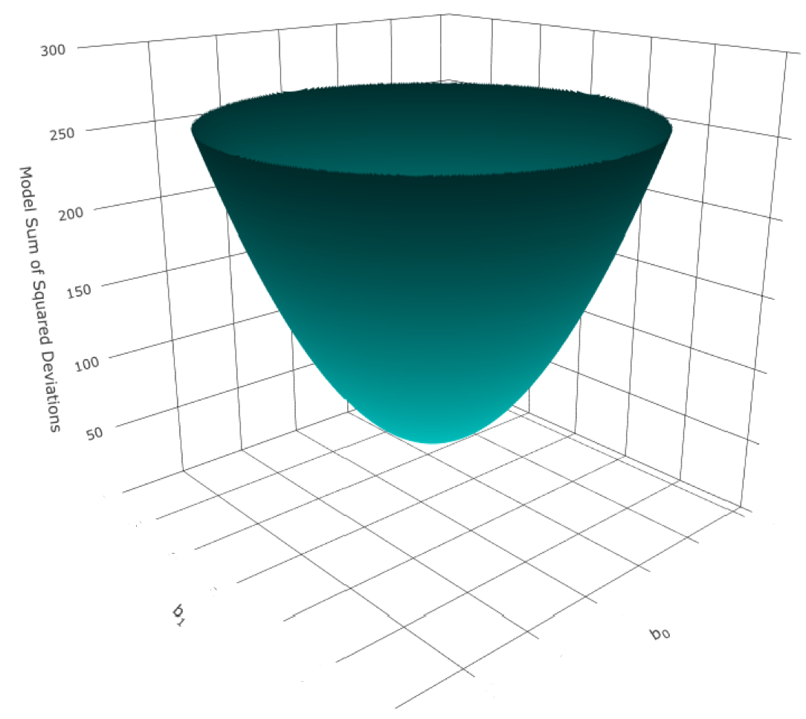
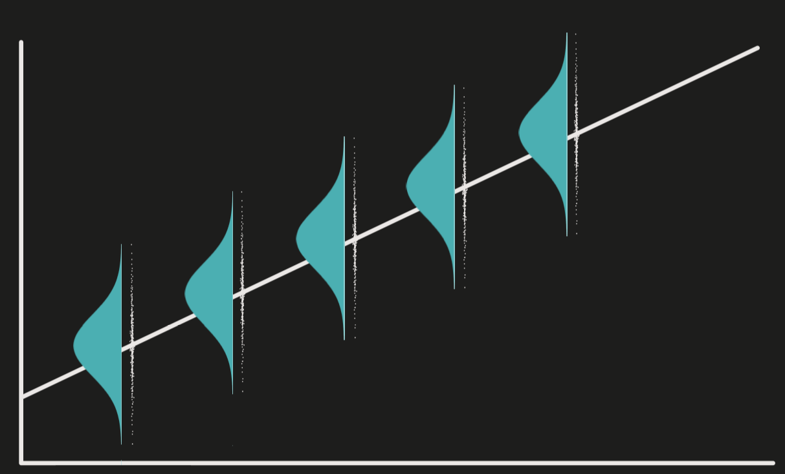
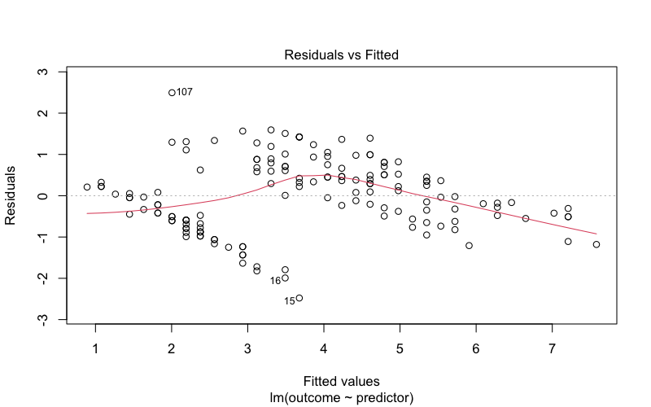
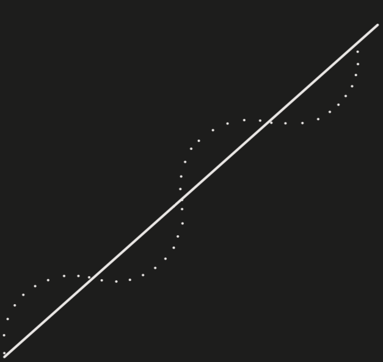
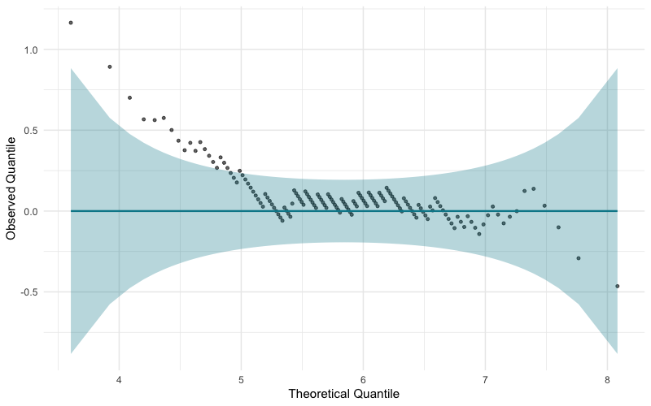
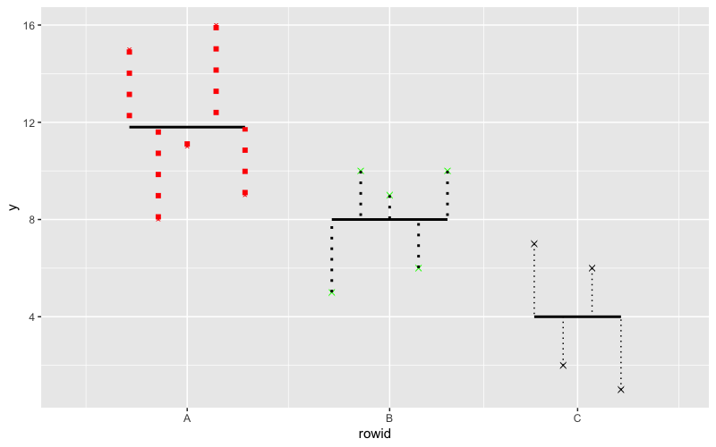

Statistics
Last Updated: 10-Oct-2022 | 17:51:57
Chapter 1 The Linear Regression Model
Mathematical model
- Description
- A model that describes the relationship between variables with a mathematical function/expression
Linear Model
- Description
- A model that describes the relationship between variables with the linear function
- Mathematics
- \(y = mx + c\)
- Assumption of the linear model
- Linearity - The relationship between the variables of interest is linear or best described by a linear function
- Additivity - The relationship between the variables of interest is best described as a linear combination
Regression
- Concept
- The process of estimating the relationship between variables of interest
Linear Regression
- Concept
- The process of estimating the relationship between variables of interest with a linear model (fitting a straight line to the data)
Curvilinear Regression
- Concept
- The process of estimating the relationship between variables of interest with a curvilinear model (fitting a curve to the data)
Simple Linear Regression
- Concept
- Linear regression with one predictor
- Mathematics
- Population Model
- \(y_{i} = \beta_{0} + \beta_{1}X_{i,1} + \epsilon_{i}\)
- Where
- \(y_{i}\)
- The value of observation i
- \(\beta_{p}\)
- Regression coefficients/parameters
- \(\beta_{0}\)
- The intercept
- The predicted value of the outcome when the value of predictor 1 (\(X_{1}\)) is 0
- \(\beta_{1}\)
- Regression coefficient/weight for predictor 1
- Represents the magnitude and direction of the relationship between predictor 1 and the outcome as the change in the value of the outcome variable for every unit change in the value of predictor 1 (it is the gradient/slope of the regression line)
- \(X_{i,1}\)
- The value of predictor 1 for observation i
- \(\epsilon_{i}\)
- Error for observation i
- Error - The absolute deviation/distance/difference between the observed value and the expected/predicted/fitted value for observation i
- This quantifies the error in prediction at the observation level
- \(y_{i}\)
- Where
- \(y_{i} = \beta_{0} + \beta_{1}X_{i,1} + \epsilon_{i}\)
- Sample Model
- \(y_{i} = \hat{\beta}_{0} + \hat{\beta}_{1}x_{i,1} + e_{i}\)
- Population Model
- Mathematics (Matrix)
- Population Model
- \(\begin{aligned}\mathbf{Y} &= \mathbf{X}\boldsymbol{\beta} + \mathbf{E} \\ \begin{bmatrix} y_{i} \\ y_{i} \\ y_{3} \\ \vdots \\ y_{n}\end{bmatrix} &= \begin{bmatrix} 1 & x_{1} \\ 1 & x_{2} \\ 1 & x_{3} \\ \vdots & \vdots \\ 1 & x_{n}\end{bmatrix} \begin{bmatrix} \beta_{0} \\ \beta_{1} \end{bmatrix} + \begin{bmatrix} \epsilon_{1} \\ \epsilon_{2} \\ \epsilon_{3} \\ \vdots \\ \epsilon_{n}\end{bmatrix}\end{aligned}\)
- Where
- \(\mathbf{Y}\)
- A column vector that contains the values for the outcome variable for each of the observations
- \(\mathbf{X}\)
- The model matrix/design matrix
- The model matrix contains
- Column vector \(\mathbf{U}\)
- A column vector of 1s one for each observation. The column of 1s corresponds to \(\beta_{0}\) in the \(\boldsymbol{\beta}\) matrix, which means that the intercept is the same for every observation.
- Column vector of x values
- A column vector that contains the values of predictor variable 1 for each of the observations
- Column vector \(\mathbf{U}\)
- \(\boldsymbol{\beta}\)
- A column vector that contains the regression coefficient/weight for each of regression parameters
- \(\mathbf{E}\)
- A column vector that contains the error of each of the observations
- \(\mathbf{Y}\)
- Where
- \(\begin{aligned}\mathbf{Y} &= \mathbf{X}\boldsymbol{\beta} + \mathbf{E} \\ \begin{bmatrix} y_{i} \\ y_{i} \\ y_{3} \\ \vdots \\ y_{n}\end{bmatrix} &= \begin{bmatrix} 1 & x_{1} \\ 1 & x_{2} \\ 1 & x_{3} \\ \vdots & \vdots \\ 1 & x_{n}\end{bmatrix} \begin{bmatrix} \beta_{0} \\ \beta_{1} \end{bmatrix} + \begin{bmatrix} \epsilon_{1} \\ \epsilon_{2} \\ \epsilon_{3} \\ \vdots \\ \epsilon_{n}\end{bmatrix}\end{aligned}\)
- Population Model
Methods of Estimation
- Ordinary Least Squares (OLS)
- Generalised Least Squares (GLS)
- Maximum Likelihood (ML)
Ordinary Least Squares
- Concept
- Estimates the regression line by fitting a line that minimises the model sum of squared residuals (the sum of the squared difference/distance/deviation between each of the observed values and the corresponding predicted/fitted values)
- \(\min{\sum_{i=1}^{n}{e^{2}_{i}}} = \min{\sum_{i=1}^{n}({y_{i} - \hat\beta_{0} - \hat\beta_{1}x_{i,1}}})^2\)
- Mathematics
- \(\hat\beta_{0} = \bar{y} - \hat\beta_{1}\bar{x}\)
- \(\hat\beta_{1} = \frac{\sum_{i=1}^{n}{(x_{i,1} - \bar{x})y_{i}}}{\sum_{i=n}^{n}{(x_{i,1} - \bar{x})^2}}\)
- Note
- I think these two equations are rather boring, looking at how they are derived is much more interesting
- Note
- Derivation
- Start off with the linear model with the outcome variable as a function of the weights
- \(y_i = \hat\beta_0 + \hat\beta_{1}x_{i,1} + e_i\)
- Make the residual as the subject (express the residual as a function of the weights)
- \(e_i = y_i - \hat\beta_{0} - \hat\beta_{1}x_{i,1}\)
- Square both sides
- \(e_{i}^{2} = (y_i - \hat\beta_{0} - \hat\beta_{1}x_{i,1})^2\)
- Sum both sides
- \(\begin{aligned}\sum_{i=1}^{n}{e_{i}^{2}} &= \sum_{i=1}^{n}{(y_i - \hat\beta_{0} - \hat\beta_{1}x_{i,1})^2} \\ S(\beta_0,\beta_1) &= \sum_{i=1}^{n}{(y_i - \hat\beta_{0} - \hat\beta_{1}x_{i,1})^2}\end{aligned}\)
- 
- Find the values of \(\hat\beta_{0}\) and \(\hat\beta_{1}\) that minimises \(S(\hat\beta_{0}, \hat\beta_{1})\)
- There is a point at which the sum of squared residuals is at the minimum
- The \(S(\hat\beta_{0}, \hat\beta_{1})\) function is a quadratic and it has a minimum that represents the minimal sum of squared residuals
- The coordinates of the minimum are the values of \(\hat\beta_{0}\) and \(\hat\beta_{1}\) that give you the least sum of squared residuals (or minimises \(S(\hat\beta_{0}, \hat\beta_{1})\))
- Hence, find the values of the coordinate of the minimum of the quadratic function
- To find each of the values of the coordinate of the minimum of the function \(S(\hat\beta_{0}, \hat\beta_{1})\), the partial derivatives of the function \(S(\hat\beta_{0}, \hat\beta_{1})\) with respect to each of the \(\hat\beta\)s are set to 0 (because the minimum has a slope of 0)
- Expression for \(\hat\beta_0\)
- \(\frac{\partial{S}}{\partial{\hat\beta_{0}}}=-2\sum_{i=1}^{n}{(y_i - \hat\beta_{0} - \hat\beta_{1}x_{i,1})}\)
- Expression for \(\hat\beta_1\)
- \(\frac{\partial{S}}{\partial{\hat\beta_{1}}}=-2\sum_{i=1}^{n}{x_{i,1}(y_i - \hat\beta_{0} - \hat\beta_{1}x_{i,1})}\)
- Solve the above simultaneous equations
- Solving the above simultaneous equations would result in
- \(\hat\beta_{0} = \frac{\sum_{i=1}^{n}{x_{i,1}}\sum_{i=1}^{n}{y_{i}} - \sum_{i=1}^{n}{x_{i,1}}\sum_{i=1}^{n}{x_{i,1}y_{i}}}{n\sum_{i=1}^{n}{x_{i,1}^2}-(\sum_{i=1}^{n}{x_{i,1}})^2}\)
- \(\hat\beta_{1} = \frac{n\sum_{i=1}^{n}{x_{i,1}y_i} - \sum_{i=1}^{n}{x_{i,1}}\sum_{i=1}^{n}{y_{i}}}{n\sum_{i=1}^{n}{x_{i,1}^2}-(\sum_{i=1}^{n}{x_{i,1}})^2}\)
- Solving the simultaneous equations would also result in
- For \(\hat\beta_{0}\)
- \(\hat\beta_{0} = \bar{y} - \hat\beta_{1}\bar{x}\)
- For \(\hat\beta_{1}\)
- \(\hat\beta_{1} = \frac{\sum_{i=1}^{n}{(x_{i,1} - \bar{x})(y_{i} - \bar{y})}}{\sum_{i=n}^{n}{(x_{i,1} - \bar{x})^2}}\)
- \(\hat\beta_{1} = \frac{\sum_{i=1}^{n}{(x_{i,1} - \bar{x})y_{i}}}{\sum_{i=n}^{n}{(x_{i,1} - \bar{x})^2}}\)
- \(\hat\beta_{1} = \frac{Cov(x,y)}{s_{x}^{2}}\)
- \(\hat\beta_{1} = \frac{S_{xx}}{S_{xx}}\)
- For \(\hat\beta_{0}\)
- Start off with the linear model with the outcome variable as a function of the weights
- Mathematics (Matrix)
- \(\boldsymbol{\beta} = (\mathbf{X'X)^{-1}X'Y}\)
- Derivation (Matrix)
- \(S(\boldsymbol{\hat\beta}) = ||\mathbf{u}||^2 = ||\mathbf{Y-\hat{Y}}||^2 = ||\mathbf{Y-X\boldsymbol{\beta}}||^2\)
- note - Matrix derivation not complete
Variance of \(\beta\)
- Variance of \(\beta\)
- Variance of \(\beta_{0}\)
- Mathematics
- \(\text{Var}(\hat\beta_{0}) = \sigma_{\hat\beta_{0}}^{2} = \frac{\sigma^{2}\sum_{i=1}^{n}{x_{i,1}^2}}{n\sum_{i=1}^{n}{x^{2}_{i,1}}-(\sum_{i=1}^{n}{x_{i,1}})^2}\)
- \(\text{SE}_{\hat\beta_{0}} = \sigma_{\hat\beta_{0}} = \sqrt{\frac{\sigma^{2}\sum_{i=1}^{n}{x_{i,1}^2}}{n\sum_{i=1}^{n}{x^{2}_{i,1}}-(\sum_{i=1}^{n}{x_{i,1}})^2}}\)
- Estimation from the sample
- Description
- \(\sigma^{2}\) is unknown
- Since \(\sigma^{2}\) is the variance of the population model (the average model sum of squared errors), it is reasonable to use the variance of the sample model (\(s^2\)) as the estimator
- It has been shown that \(s^2\) is an unbiased estimator of \(\sigma^{2}\)
- Mathematics
- \(\hat{\text{Var}(\hat\beta_{0})} = \hat\sigma_{\hat\beta_{0}}^{2} = \frac{s^{2}\sum_{i=1}^{n}{x_{i,1}^2}}{n\sum_{i=1}^{n}{x^{2}_{i,1}}-(\sum_{i=1}^{n}{x_{i,1}})^2}\)
- \(\hat{\text{SE}}_{\hat\beta_{0}} = \hat\sigma_{\hat\beta_{0}} = \sqrt{\frac{s^{2}\sum_{i=1}^{n}{x_{i,1}^2}}{n\sum_{i=1}^{n}{x^{2}_{i,1}}-(\sum_{i=1}^{n}{x_{i,1}})^2}}\)
- Description
- Mathematics
- Variance of \(\beta_{1}\)
- Population
- Mathematics
- \(\sigma_{\hat\beta_{1}^{2}} = \frac{n\sigma^{2}}{n\sum_{i=1}^{n}{x^{2}_{i,1}}- (\sum_{i=1}^{n}{x_{i,1}})^2}\)
- \(\text{Var}(\hat\beta_{1}) = \sigma_{\hat\beta_{1}^{2}} = \frac{n\sigma^{2}}{n\sum_{i=1}^{n}{(x_{i,1} - \bar{x})^2}}\)
- \(\text{Var}(\hat\beta_{1}) = \sigma_{\hat\beta_{1}}^{2} = \frac{\sigma^{2}}{\sum_{i=1}^{n}{(x_{i,1} - \bar{x})^2}}\)
- \(\text{SE}_{\hat\beta_{1}} = \sigma_{\hat\beta_{1}} = \sqrt{\frac{\sigma^{2}}{\sum_{i=1}^{n}{(x_{i,1} - \bar{x})^2}}}\)
- Mathematics
- Estimation from the sample
- Mathematics
- \(\hat{\text{Var}(\hat\beta_{1})} = \hat\sigma_{\hat\beta_{1}}^{2} = \frac{s^{2}}{\sum_{i=1}^{n}{(x_{i,1} - \bar{x})^2}}\)
- \(\hat{\text{SE}}_{\hat\beta_{1}} = \hat\sigma_{\hat\beta_{1}} = \sqrt{\frac{s^{2}}{\sum_{i=1}^{n}{(x_{i,1} - \bar{x})^2}}}\)
- Mathematics
- Population
- Variance of \(\beta_{0}\)
Assumptions of the Linear Models
- Linearity
- Additivity
- Normality of the sampling distribution
- Uncorrelated errors
- Heteroscedasticity
Linearity
- Concept
- The relationship between each of the predictor variables and the outcome is linear (or best described as linear)
- This is the most important assumption of linear models because even if all other assumptions are met, the model is invalid because the description of the process you want to model is wrong
- Treatment
- Transformation
- Segmented regression
- Fit non-linear models
Additivity
- Concept
- The combined effect of multiple predictors in a multiple regression is best described as a linear combination of the predictors
- This, along with linearity, is the most important assumptions of linear models
- Treatment
- Transformation
- Segmented regression
- Fit non-linear models
Uncorrelated Errors
- Concept
- The errors in the population model are uncorrelated with each other
- In other words, there is no autocorrelation/serial correlation
- The distribution of errors at given value of x is uncorrelated with the distribution of errors at another value of x
- It is important to note that the errors are not individual errors, they are theoretical distribution of errors given x, in other words, for each vale of x, there is a distribution of errors, and the observed residuals given x you have are sampled from the distribution of errors given the same x (see this short description on CrossValidated)
- Mathematics
- \(\text{Cov}(e_{i}, e_{j}) = 0\)
- Mathematics
- \(\boldsymbol\Phi = \Sigma_{e_{i}e_{j}} = \sigma^{2}\mathbf{I} = \begin{bmatrix} \sigma_{1,1}^{2} & 0 & 0 & \cdots & 0 \\ 0 & \sigma_{2,2}^{2} & 0 & \cdots & 0 \\ 0 & 0 & \sigma_{3,3}^{2} & \cdots & 0 \\ \vdots & \vdots & \vdots & \ddots & \vdots \\ 0 & 0 & 0 & 0 & \sigma_{i,j}^{2} \end{bmatrix}\)
- Note
- All the off-diagonals are 0s, indicating that all errors are uncorrelated with each other
- The variances are unconstrained, hence, they can vary
- Note
- \(\boldsymbol\Phi = \Sigma_{e_{i}e_{j}} = \sigma^{2}\mathbf{I} = \begin{bmatrix} \sigma_{1,1}^{2} & 0 & 0 & \cdots & 0 \\ 0 & \sigma_{2,2}^{2} & 0 & \cdots & 0 \\ 0 & 0 & \sigma_{3,3}^{2} & \cdots & 0 \\ \vdots & \vdots & \vdots & \ddots & \vdots \\ 0 & 0 & 0 & 0 & \sigma_{i,j}^{2} \end{bmatrix}\)
- Effects of correlated errors on OLS estimation
- Biased SE
- The standard mathematical expression of the estimate of the variance of the sampling distribution (\(\frac{\sigma^{2}}{\sum_{i=1}^{n}{(x_{i,1} - \bar{x})^2}}\)) is a biased estimate of the true variance of the sampling distribution
- If errors are positively correlated, the standard mathematical expression of the estimate of the variance of the sampling distribution (\(\frac{\sigma^{2}}{\sum_{i=1}^{n}{(x_{i,1} - \bar{x})^2}}\)) will underestimate the true value (a negative bias), this means that the true sampling variance and SE are larger than estimated, this means that OLS is less efficient/optimal than other estimators, this follows that all statistical inferences involving the SE will be biased (e.g. underestimating the confidence intervals, overestimating the p-value in significance tests, higher Type I error etc.)
- The standard mathematical expression of the estimate of the variance of the sampling distribution (\(\frac{\sigma^{2}}{\sum_{i=1}^{n}{(x_{i,1} - \bar{x})^2}}\)) is a biased estimate of the true variance of the sampling distribution
- Biased SE
- Assessing Autocorrelation
- See the autocorrelation section
- Treatment
- Autocorrelation consistent standard errors
- Cluster robust standard errors
- Use other estimators
Normality of the Sampling Distribution
- Concept
- The sampling distribution of the sample estimates is normally distributed
- A normally distributed sampling distribution is desirable because it can be modelled easily with the normal distribution curve and inferential statistics can be easily derived (which may be easier than if it has a non-normal distribution, e.g. Pearson’s r)
- Effects of violation of the assumption
- All the standard mathematical expressions and procedures for estimating the inferential statistics and uncertainty of the sample estimate are based on the assumption that the sampling distribution is normal or at least approximately normal. If the true sampling distribution is not normal, then all the inferential statistics and estimates of uncertainty of the sample estimate are incorrect
- Assessing Normality of the sampling distribution
- Distribution of model residuals
- Description
- Assess whether the model residuals are normally distributed
- Explanation
- In general, in a linear combination of variables, if the variables in the linear combination are random, independent, and normally distributed (their sampling distribution), then the linear combination itself is also normally distributed (the sampling distribution of the linear combination is normal)
- Each of the regression parameters can be expressed as a linear combination
- \(\hat\beta_{1} = \frac{\sum_{i=1}^{n}{(x_i - \bar{x} )y_i}}{\sum_{i=1}^{n}{(x_i - \bar{x})^2}} = \sum_{i=1}^{n}{\frac{x_i - \bar{x}}{\sum_{i=1}^{n}{(x_i - \bar{x})^2}}y_i}\)
- Where
- \(\frac{x_i - \bar{x}}{\sum_{i=1}^{n}{(x_i - \bar{x})^2}}\) is treated as a constant and \(y_i\) is treated a variable
- Where
- \(\hat\beta_{1} = \frac{\sum_{i=1}^{n}{(x_i - \bar{x} )y_i}}{\sum_{i=1}^{n}{(x_i - \bar{x})^2}} = \sum_{i=1}^{n}{\frac{x_i - \bar{x}}{\sum_{i=1}^{n}{(x_i - \bar{x})^2}}y_i}\)
- Hence, for the linear combination (\(\hat\beta_1\)) to be normally distributed, the random variable \(y_i\) has to be independent and normally distributed
- Since independence and normality of the errors imply independence and normality of the random variable \(y_i\), normality of errors can be used to indicate that the linear combination (\(\hat\beta_1\)) is normally distributed
- And since we don’t have the errors in hand, we use the model residuals
- Assessing normality
- See the ‘Assessing Normality’ section
- Description
- Distribution of model residuals
- The Central Limit Theorem and the assumption of normality
- The distribution of the residuals is not important if sample size is “sufficiently” large according to the Central Limit Theorem. (The CLT states that the sampling distribution is approximately normal if sample size is large and can be assumed to be normal if sample size is sufficiently large (n > 30) regardless of the shape of the population distribution)
- Hence, there is much less to worry about the non-normality of the sampling distribution if the sample size is “sufficiently” large
- Just some side notes
- \(y_i\) also needs to be normally distributed, if y is not normally distributed, then the scores of y need to be transformed such that it’s sampling distribution is normal or approximately normal (I am still not sure about this part)
- Treatment
- Use robust/non-parametric methods
- Transformation
Heteroscedasticity
- Description
- Aka - Homogeneity of variance or constant variance
- The variance of the distribution of errors given x is the identical between values of x in the population model
- The variance of the distribution of errors given x is a constant - It is a fixed value and does not vary across values of x in the population model
- Some sources say that the variance of errors given x does not depend on x (e.g. Rice, 2006; Field, 2023)
- Visualisation
- 
- Mathematics
- \(\text{Var}(\epsilon_{i}) = \sigma^2\)
- Mathematics (Matrix)
- \(\boldsymbol\Phi = E(\epsilon\epsilon'|X) = \Sigma_{\epsilon\epsilon} = \begin{bmatrix} \sigma^{2} & \phi_{1,2} & \phi_{1,3} & \cdots & \phi_{1,j} \\ \phi_{2,1} & \sigma^{2} & \phi_{2,3} & \cdots & \phi_{2,j} \\ \phi_{3,1} & \phi_{3,2} & \sigma^{2} & \cdots & \phi_{3,j} \\ \vdots & \vdots & \vdots & \ddots & \vdots \\ \phi_{i,1} & \phi_{i,2} & \phi_{i,3} &\cdots & \sigma^{2} \end{bmatrix}\)
- Notes
- The variances in the diagonals are all \(\sigma^2\)
- The covariances in the off-diagonals can vary (the covariances are not the condition here)
- Notes
- \(\boldsymbol\Phi = E(\epsilon\epsilon'|X) = \Sigma_{\epsilon\epsilon} = \begin{bmatrix} \sigma^{2} & \phi_{1,2} & \phi_{1,3} & \cdots & \phi_{1,j} \\ \phi_{2,1} & \sigma^{2} & \phi_{2,3} & \cdots & \phi_{2,j} \\ \phi_{3,1} & \phi_{3,2} & \sigma^{2} & \cdots & \phi_{3,j} \\ \vdots & \vdots & \vdots & \ddots & \vdots \\ \phi_{i,1} & \phi_{i,2} & \phi_{i,3} &\cdots & \sigma^{2} \end{bmatrix}\)
- Effects of Homoscedasticity
- Biased estimation of sampling variance
- The mathematical expression for the estimate of the sampling variance assumes homoscedasticity (see derivation) (or rather, requires homoscedasticity to be unbiased). If there is heteroscedasticity, then the sampling variance estimated using the same standard mathematical expression will be biased, in that the estimated value is not the same as the true value, this in turn means that the parameter estimates are not optimal due to increased sampling variation and there are other estimators that will be mor efficient than OLS, the biased sampling variance estimate will affect the SE estimate, and will affect all statistical inferences using the sampling variance (e.g. confidence intervals, test statistic, p-values etc.)
- Confidence intervals can be “extremely inaccurate” when ignoring heteroscedasticity (Wilcox, 2010)
- But this assumption matters only if group sizes are unequal
- Biased estimation of sampling variance
- Assessing Homo/Heteroscedasticity
- Description
- The assumption applies to the population model, it is best to assess heteroscedasticity in the population through heteroscedasticity in the sample model
- Ways to assess heteroscedasticity
- Plots
- Statistical tests
- Plots
- Residual Plots
- Residuals vs fitted plot
- Residuals vs fitted plot
- Description
- The residuals are plotted against the fitted values
- A plot that shows the vertical distribution of residuals in the y-axis for each of the fitted values in the x-axis
- Basically it is the scatter plot but detrended
- It can be based on raw or standardised scores
- Visualisation
- 

## Base R
model <- lm(formula = outcome ~ predictor, data = data)
plot(model, which = 1)
- Description
- Residual Plots
- Statistical Tests
- Statistical Tests
- Levene’s test
- Brown-Forsythe test
- Hartley’s Fmax
- Levene’s tests
- Description
- Tests the null hypothesis that the variances in different groups are equal
- It is a one-way ANOVA with absolute deviation as the outcome variable and the groups/values of x as the predictor variable
- It tests whether the absolute deviation varies between groups/values of x
- Original Levene’s test
- Mathematics
- \(\textit{W} = \frac{\sum_{i=1}^{n}{n_{g}(|\bar{d}|_{g} - |\bar{d}|_{G})^2}}{\sum_{i=1}^{n}{n_{g}(|{d}|_{i} - |\bar{d}|_{g})^2}} \times \frac{n-k}{k-1}\)
- Where
- \(g\) - Denotes group
- \(G\) - Denotes grand
- \(d_i = y_i - \bar{y}_{g}\) - A deviation means the difference between a score and mean of the group in which it belongs
- Note
- Levene’s test statistic is expressed as such but it can be interpreted as the F-statistic
- \(\textit{W} = \frac{\sum_{i=1}^{n}{n_{g}(|\bar{d}|_{g} - |\bar{d}|_{G})^2}}{\sum_{i=1}^{n}{n_{g}(|{d}|_{i} - |\bar{d}|_{g})^2}} \times \frac{n-k}{k-1}\)
- Mathematics
- Brown-Forsythe test
- Description
- Similar to Levene’s test but uses the median in the absolute deviation instead (\(d_i = y_i - \tilde{y}_{g}\))
- Description
- Levene’s test using trimmed mean
- Description
- Similar to Levene’s test but uses the trimmed mean instead of the mean
- Description
- Comparing the tests
- Trimmed mean performed best when the underlying data followed a Cauchy distribution and the median performed best when the data followed a chi-squared distribution with 4 degrees of freedom (sharply skewed distribution) (Brown & Forsythe, 1974; extracted from Wiki)
- Description
- Hartley’s Fmax (Pearson & Harley, 1954)
- Description
- It is the ratio of the variances between the group with the biggest variance and the group with the smallest variance
- It then conducts a null hypothesis significance test for the ratio
- The Fmax isn’t used very often, so it is harder to find a critical value table
- Mathematics
- \(\textit{F}_{max} = \frac{\max{s_{g}^{2}}}{\min{s_{g}^{2}}}\)
- Where
- \(\max{s_{g}^{2}}\) - The largest group variance among all the groups
- \(\min{s_{g}^{2}}\) - The smallest group variance among all the groups
- Where
- \(\textit{F}_{max} = \frac{\max{s_{g}^{2}}}{\min{s_{g}^{2}}}\)
- Description
- Cochrane’s C test
- Description
- It tests whether the variance of a particular group is exceptionally larger than the rest of the group (it is an upper tail test)
- The test statistic is the ratio of the variane of a group of interest and the overall variance (of all of the groups)
- It then conducts a null hypothesis significance test on the ratio
- It is used to test for variance outlier
- Mathematics
- \(\textit{C}_{g} = \frac{s_{g}^{2}}{\sum_{i=1}^{n}{s_{g}^{2}}}\)
- Where
- \(s_{g}^{2}\) - The variance of a particular group
- \(\sum_{i=1}^{n}{s_{g}^{2}}\) - The sum of all the variances (the total variance)
- Where
- \(\textit{C}_{g} = \frac{s_{g}^{2}}{\sum_{i=1}^{n}{s_{g}^{2}}}\)
- Null Hypothesis Significance Test
- Hypothesis
- \(\textit{H}_{0}:\) All variances are equal
- \(\textit{H}_{1}:\) At least one group variance is significantly larger than the other variances
- Hypothesis
- Description
- Don’t use these tests
- Sample size
- In large samples, even trivial heteroscedasticity can produce significant Levene’s result
- In small samples, Levene’s test has inadequate power to detect heteroscedasticity
- Group size equality
- Homoscedasticity tests work best when group sample sizes are equal (when heteroscedasticity does not matter as mentioned before) and does not work well when sample sizes are unequal (when heteroscedasticity matters)
- Adjust for it instead…
- There are robust methods for heteroscedasticity, hence, no need to drill on testing heteroscedasticity
- Read Zimmerman (2004) about the problems with heteroscedasticity tests…
- Sample size
- Statistical Tests
- Description
- Remedies
- Heteroscedasticity-Consistent Standard Errors
- Weighted Least Squares
Heteroscedasticity-Consistent Standard Error
- Description
- Aka
- Heteroscedasticity-Robust Standard Errors
- Robust Standard Errors
- Eicker-Huber-White standard errors
- Huber-White Standard Errors
- White Standard Errors
- Sandwich Estimator (because the matrix expression looks like a sandwich)
- Aka
- Versions
- HC1
- HC2
- HC3
- HC4
- HC0
- Description
- The first version of the HC standard error
- Mathematical desciption
- In the mathematical expression of the estimate of the sampling variance of the beta parameters, the variance of errors given x is not treated as fixed/a constant, rather, it relaxes the assumption of homoscedasticity and treat the variance of errors given x are different at different values of x
- Mathematics
- Population Model
- \(\textit{Var}(\hat\beta_{1}) = \frac{1}{(\sum_{i=1}^{n}{(x_i - \bar{x})^2})^2} \times \sum_{i=1}^{n}{(x_i - \bar{x})^2 \textit{Var}(\epsilon_i|X)}\)
- Sample Estimatte
- \(\textit{Var}(\hat\beta_{1}) = \frac{1}{(\sum_{i=1}^{n}{(x_i - \bar{x})^2})^2} \times \sum_{i=1}^{n}{(x_i - \bar{x})^2 e_{i}^{2}}\)
- Where
- \(e_{i}^{2}\) - Squared residual for observation i (it is basically the variance of residual given x, but we usually only have 1 observation given x)
- Where
- \(\textit{Var}(\hat\beta_{1}) = \frac{1}{(\sum_{i=1}^{n}{(x_i - \bar{x})^2})^2} \times \sum_{i=1}^{n}{(x_i - \bar{x})^2 e_{i}^{2}}\)
- Population Model
- Mathematics (Matrix)
- \(\boldsymbol{\hat\beta_1} = (\mathbf{X'X})^{-1}(\sum_{i=1}^{n}{e_{i}^{2}x'_{i}x_{i}})(\mathbf{X'X})^{-1}\)
- Evaluation
- Simulations show that it is better than the normal estimation when sample size is large but worse when sample size is small
- Description
- Which version is the best?
- HC3 is better than HC0 and HC2 (Long & Ervin, 2000)
- HC4 appears to be more robust than HC3 when there are influential cases and non-normal errors (See Hayes and Cai, 2007 for a review)
- Heteroscedastic-Autocorrelation-consistent variance estimation
- Description
- Variance estimation robust to heteroscedasticity and autocorrelation
- They are extensions of the HC standard error
- Types
- Newey and West (1987)
- Description
- Cluster Robust Standard Errors
- Description
- Standard Errors estimation that accounts for heteroscedasticity and correlated errors
- Based on the concept that data points can be clustered in a certain way
- Mathematics
- \(\textit{Var}(\hat\beta_{1}) = \frac{1}{(\sum_{i=i}^{n}{(x_{i} - \bar{x})^2})^2} \times \sum_{i=1}^{n}{\textit{Var}(\epsilon_{i}(x_{i} - \bar{x}))} + 2\sum_{j=1}^{n}{\sum_{i=1}^{n}{(x_{i} - \bar{x})(x_{j} - \bar{x})(\epsilon{}_{i}\epsilon{}_{j})}}\)
- \(\textit{Var}(\hat\beta_{1}) = \frac{1}{(\sum_{i=i}^{n}{(x_{i} - \bar{x})^2})^2} \times \sum_{j=1}^{n}{\sum_{i=1}^{n}{\textit{Cov}((x_{i} - \bar{x})\epsilon{}_{i}, (x_{j} - \bar{x})\epsilon{}_{j})}}\)
- \(\textit{Var}(\hat\beta_{1}) = \frac{1}{(\sum_{i=i}^{n}{(x_{i} - \bar{x})^2})^2} \times \sum_{j=1}^{n}{\sum_{i=1}^{n}{(x_{i} - \bar{x})(x_{j} - \bar{x})(\epsilon{}_{i}\epsilon{}_{j})}}\)
- \(\textit{Var}(\hat\beta_{1}) = \frac{1}{(\sum_{i=i}^{n}{(x_{i} - \bar{x})^2})^2} \times \sum_{j=1}^{n}{\sum_{i=1}^{n}{(x_{i} - \bar{x})(x_{j} - \bar{x})(\epsilon{}_{i}\epsilon{}_{j})}}1[A]\)
- Where
- \(1[A]\)
- \(A\) is an event in which i and j are in the same cluster
- \(1[A]\) - A indicator function that indicates whether 2 errors belong to the same cluster
- The indicator function \(1[A]\) equals 1 if event A happens (i and j are in the same cluster)
- The indicator function \(1[A]\) equals 0 if event A does not happen (i ad j are not in the same cluster)
- This results in a block matrix where the diagonal blocks are the error variance-covariance submatrices and the off-diagonal blocks are all 0s (assuming that the clusters are uncorrelated with each other) - For this reason, it is robust for arbitrary within cluster error correlation but not between cluster error correlation
- \(1[A]\)
- Where
- Mathematics (Matrix)
- \(\textbf{V} = (\textbf{X}'\textbf{X})^{-1} \textbf{X}'\boldsymbol\Phi \textbf{X}(\textbf{X}'\textbf{X})^{-1}\)
- Where
- \(\boldsymbol\Phi\) - Error Variance-Covariance matrix
- Where
- \(\textbf{V} = (\textbf{X}'\textbf{X})^{-1} \textbf{X}'\boldsymbol\Phi \textbf{X}(\textbf{X}'\textbf{X})^{-1}\)
- Description
The Bootstrap (Efron & Tibshirani, 1993)
- Description
- Estimates the properties of the sampling distribution empirically from the sample data
Autocorrelation
- Description
- Aka serial correlation
- Errors given x are correlated with errors in other values of x
- Autocorrelation is often described with respect to time because autocorrelation usually occurs in time series data (correlated across time)
- Reasons for autocorrelation
- Temporal autocorrelation
- Description
- Autocorrelation across time time
- Examples
- Repeated measures designs
- Time series
- Longitudinal designs
- Growth models
- Description
- Spatial autocorrelation
- Description
- Autocorrelation due to space
- Examples
- Clustered data
- Description
- Ignoring covariates
- If a covariate is not included in the model, the errors will capture the effect of that covariate
- The error is not random - There are systematic process in the errors that are mistreated as random or ignored
- Model misspecification
- E.g. ignoring linearity
- Measurement error in the independent variable
- Temporal autocorrelation
- Types of serial correlation
- First-order serial correlation
- First-order serial correlation
- Description
- The correlation between errors at any one point of x (\(e_{x}\)) and errors at the point of x that is 1 unit less (\(e_{x-1}\))
- Note that t is often used instead of x, but I am keeping things general here
- Visualisation
- Positive first-order serial correlation
- 
- Negative first-order serial correlation
- Positive first-order serial correlation
- Mathematical concept
- Tests testing for first-order serial correlation usually assess whether errors given \(x\) can be predicted by errors a unit of x that is 1 unit smaller (\(x - 1\))
- Mathematics
- \(e_{t} = \rho{}e_{x-1} + u_x\)
- Where
- \(\rho{}\) - First-order serial correlation coefficient
- The process for the error term is called the first-order autoregressive process (AR1)
- Where
- \(e_{t} = \rho{}e_{x-1} + u_x\)
- Tests for first-order serial correlation
- Durbin-Watson test
- Breusch-Godfrey test
- Durbin-Watson test
- The Durbin-Watson statistic
- Mathematics
- \(d = \frac{\sum_{t=2}^{n}{(e_{t} - e_{t-1})^2}}{\sum_{t=1}^{n}{e_{t}^{2}}}\)
- Interpretation
- \(0 ≤ d ≤ 4\)
- \(d = 2\) - No serial correlation
- \(d < 2\) - Positive serial correlation (\(d < 1\) is interpreted as serious positive serial correlation and thus concerning)
- \(d > 2\) - Negative serial correlation
- Mathematics
- Significance testing
- Statistical significance of the Durbin-Watson statistic us often sort through assessing whether the observed Durbin-Watson statistic is inside or outside the critical boundary in the sampling distribution under the null hypothesis
- The critical boundary is a function of sample size and the number of variables
- The Durbin-Watson statistic
- Breusch-Godfrey test (Breusch & Godfrey, 1978)
- Concept
- Aka auxiliary regression (A regression for supplementary purposes)
- Tests the extent to which the errors given x can be predicted by the predictor in the model and the model error at a value of x that is 1 less, model error at a value of x that is 2 less, model error at a value of x that is 3 less, and so on (these are the lagged variables, and the number of lagged variables is defined by the researcher, but some people may include lagged variables until the errors in that auxiliary regression is no longer autocorrelated)
- Mathematics
- \(e_{t} = \beta_{0} + \beta_{1}x_i + \beta_{2}e_{t-1} + \beta_{3}e_{t-2} + \beta_{4}e_{t-3} + \cdots + \beta_{p+1}e_{t-p} + u_i\)
- Null Hypothesis Significance Test
- The Breusch-Godfrey test statistic
- Mathematics (wiki)
- \(nR^2\)
- Mathematics (wiki)
- Distribution of the Breusch-Godfrey test statistic
- \(nR^2 \sim{} \chi_{p}^{2}\)
- Warning
- A source (zed statistics) said it is \((n-p)R^2 \sim{} \chi_{p}^{2}\)
- But they are very similar, so I think it’s fine
- Warning
- \(nR^2 \sim{} \chi_{p}^{2}\)
- Hypotheses
- \(H_0:\) There is no autocorrelation
- \(H_1:\) There is autocorrelation in the lagged variables in the model
- The Breusch-Godfrey test statistic
- Concept
- Description
Assessing Normality
- Ways to assess normality
- Plots
- Statistical Tests
- Plots
- Types of plots
- Frequency Distribution plot (e.g. histogram)
- Theoretical vs Observed distribution plots
- Theoretical vs Observed Distribution plots
- Description
- A plot with the distributional points of a particular distribution of interest and the distributional points of the data
- It visualises how well the distributional point of each of the data points fit their corresponding distributional point a particular distribution of interest (e.g. a normal distribution)
- The corresponding distributional point is the expected value that the observed score should have in a particular distribution of interest
- Types
- P-P plot
- Q-Q plot
- P-P plot
- Description
- A plot with the probability of each of the points of a particular distribution of interest against the probability of each of the data points in the data (relative to the whole data)
- P-P plot for the normal distribution
- Concept
- A plot with the probability of each of the points of a normal distribution against the probability of each of the data points in the data (relative to the whole data)
- Concept
- Description
- Q-Q plot
- Description
- A plot with the quantile or z-score of each of the points of a particular distribution of interest against the quantile or z-score of each of the data points in the data (relative to the whole data)
- Detrending (Thode, 2002)
- Concept
- Detrending - Transforming the plots such that the line showing the theoretical distributional values is horizontal and not diagonal
- The diagonal arrangement of Q-Q and P-P plots can lead to visual bias, detrending the plots can reduce visual bias
Visualisation
- 
- Concept
- Q-Q plot for the normal distribution
- Concept
- A plot with the quantile or z-score of each of the points of a normal distribution against the quantile or z-score of each of the data points in the data (relative to the whole data)
- Visualisation
- 
-
# Q-Q plot (general)
ggplot2::ggplot(data = iris, aes(sample = Sepal.Length)) +
qqplotr::stat_qq_point(size = 1, alpha = 0.6, detrend = FALSE) +
qqplotr::stat_qq_line(colour = "#008898", detrend = FALSE) +
qqplotr::stat_qq_band(fill = "#008898", alpha = 0.3, detrend = FALSE) +
labs(x = "Theoretical Quantile", y = "Observed Quantile") +
theme_minimal()
# Q-Q plot for Model residual
plot(model_object, which = 2)
- Concept
- Description
- Description
- Types of plots
- Statistical Tests
- Statistical Tests
- Kolmogorov-Smirnov test
- Shapiro-Wilk test
- Kolmogorov-Smirnov test
- Description
- Tests the null hypothesis that the scores are normally distributed
- It compares the scores to a normally distributed set of scores with the same mean and standard deviation
- Description
- The problem with statistical tests
- Statistical significance does not necessarily mean practical importance
- Statistical significance tells how real an effect is but does not tell the practical importance/size of the effect
- It doesn’t work when you need it, but works when you don’t need it (that’s what she said)
- The smaller the sample size, the lower the power of statistical tests, the less likely normality problems are detected by these statistical tests, however, this is when the assumption of normality is more of a concern
- The larger the sample size, the higher the power of statistical tests, the more likely normality problems are detected by these statistical tests, however, this is when the assumption of normality is less of a concern due to the CLT
- Robust methods are the way to go
- Violation of the normality assumption can be adjusted, hence, we don’t have to drill on statistical tests (comparing non-robust result with robust result as a sensitivity analysis may be a better option)
- Statistical significance does not necessarily mean practical importance
- Statistical Tests
Robust Techniques
- Robust Techniques
- Trimming
- Winsorizing
- The Bootstrap
Robust Estimators
- Robust Estimators
- M-estimators
- L-estimators
- S-estimators
- R-estimators
- Extremum estimator (\(\hat\theta\))
- Description
- Extremum Estimator - A class of estimators in which the parameters are estimated through maximisation or minimisation of a certain obective function that depends on the data
- The theory of extremum estimators was developed by Amemiya (1985)
- Description
M-estimators
- Description
- M-estimators - Extremum estimators for which the obejct function is a sample average
- History
- These are called M-estimators because Maximum likelihood is one of the first of these estimators, hence, Huber (1981, p. 43) called these estimators as M-estimators to denote that these are “maximum likelihood-type” estimators
- Examples
- Least squares - Because the estimator is defined as a minimum of the sum of the squared errors/residuals
- Maximum Likelihood- Because it maximises the likelihood function over the parameter space
Trimming
- Description
- Deleting scores from the extremes
- Robust methods tend to use trimming (e.g. trimmed mean, the median, M-estimators, etc.)
- Trimming can be baesd on percentage or standard deviation of the scores relative to the data
- Standard deviation-based trimming is a bad idea (Field, 2023)
- Percentage-based trimming
- Description
- Deleting certain percentage of data points from each of the extremes before any statistic is calculated
- 10% trimming
- Deleting 10% of the data points from each of the extremes
- If the sample size is 100, then 10 of the data points at the higher end (because 0% of 100 is 10) and 10 data points at the lower end will be deleted
- The median is a trimmed mean
- The median is the mean when all but the middle data point are trimmed
- A trimmed statistic
- A statistic that is calculated on the trimmed data (e.g. trimmed mean)
- Description
Winsorizing
- Description
- Arranging the data in ascending order and replacing values outside a threshold boundary (outside of which is considered extremes of the data) woth the value at the threshold boundary
- Defining the threshold boundary
- Percentage-based threshold boundary
- Description
- The threshold boundary is determined by a percentage of the data Example
- The data
- 9, 19, 22, 4, 8, 21, 9, 10, 0, 0, 1, 17, 4, 19, 13, 11, 0, 5, 3, 4
- Arrange in ascending order
- 0, 0, 0, 1, 3, 3, 4, 4, 5, 8, 9, 9, 10, 11, 13, 17, 19, 19, 21, 22
- Winsorize
- 5% Winsorization
- The bottom 5% and upper 5% of the data is replaced
- 5% of a data with n = 20 is 1
- Hence, the bottom first data point is replaced with the value after it, and the upper first data point is replaced with the value before it
- 0, 0, 0, 1, 3, 3, 4, 4, 5, 8, 9, 9, 10, 11, 13, 17, 19, 19, 21, 21
- 10% Winsorization
- The bottom 10% and upper 10% of the data is replaced
- 10% of a data with n = 20 is 2
- Hence, the bottom 2 data points are replaced with the value after the second data point, the upper 2 data points are replaced with the value before the boundary
- 0, 0 , 0, 1, 3, 3, 4, 4, 5, 8, 9, 9, 10, 11, 13, 17, 19, 19, 19, 19
- 20% Winsorization
- The data points in the bottom 20% and those in the upper 20% of the data is replaced
- 20% of the data of N = 20 is 4
- Hence the bottom 4 data points are replace with the value at the lower boundary, the upper 4 data poitns are replaced with the value at the upper boundaryy
- 3, 3, 3, 3 , 3, 3, 4, 4, 5, 8, 9, 9, 10, 11, 13, 17, 17, 17, 17, 17
- The data points in the bottom 20% and those in the upper 20% of the data is replaced
- 5% Winsorization
- Description
- Standard-deviation based threshold boundary
- The threshold boundary is determined by the standard deviation of the data
- The scores at the are replaced by the unstandardised score that has a standardised score at the boundary (not repeating the actual score at the boundary as in trimming)
- Percentage-based threshold boundary
Theil-Sen Estimator
- Description
- Robust regarding outliers among the predictor variables
- Mathematics
- \(\hat\beta_{p} = \tilde{\beta_{p,ij}}\) (need to double check)